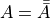

倒霉的理发师¶
周末的时候和女儿讨论了一个问题。她说，最近在学习杠杆，和同学讨论什么是“动力”和“ 阻力”的时候发生了争议。同学认为“阻止物体运动的力叫阻力，引起物体运动的力叫动力” ，她认为“阻力和动力是有主的，看从谁的角度来说，从我一方来说，我施加的力叫动力， 阻止我施加的力叫阻力”。她问我谁对。
我的回答是，按你定义的你对，按她的定义她对。按书本的定义——我不知道，我认为根本 没有这个定义，要不你拿书出来看。拿书出来看，发现书是这样写的：
从支点到力的作用线的距离叫“力臂”。从支点到动力的作用线的距离叫作“动力臂”；从支点到阻力的作用线的距离叫作“阻力臂”。
就这么多了，根本没有定义什么是“动力”，什么是“阻力”。
也就是说，物理书是认为“动力”和“阻力”是一个“普通”概念，是个“共识”，不需要解释的 。换句话说，物理书其实认为作用在杠杆上的两个力，（如果达成了平衡），那么其中一 个叫动力，另一个就叫阻力。这里根本就没有定义什么叫动力，什么叫阻力。它只定义了 动力臂和阻力臂。
这个讨论很有意思。这样我们发现，其实，我们争论的很多东西，都取决于我们的“定义” ，“定义”是没有“天然”真理的，你说什么东西属于这个“定义”，它就符合这个定义，如果 你说它不是，它不符合这个定义了。从这里我们可以感受到“推理”的规律：对于中学生， 作为一种朴素的理解，推理其实就是用定义来“定义”集合，研究集合的特征，然后通过集 合的组合实现更多的结论。那个集合，和集合的特征，是推理的原始材料，而“推论”，是 我们基于集合的一种组合。
通过推论，我们只需要研究一些基本事实，就可以得到更多的事实。我们感受到各种科学的“严谨性”，都来自对“定义”的精细限定。
比如：
我们已经证明（无论用什么办法证明）：
三角形包括而且仅包括锐角三角形，直角三角形和钝角三角形锐角三角形的角平分线交于一点直角三角形的角平分线交于一点钝角三角形的角平分线交于一点
基于推理，我们有：
所有三角形的角平分线交于一点
前面的条件，就是定义和对定义的属性的研究。而后面那个结论，就是一个推理。这是一 种称为“朴素集合论”（Navies Set Theory)的思想。我们学习的经典数学，物理，化学的 很多推理，都是基于这个思想来的。
刚才那个关系大概就是这样：

用公式表示大概就是P=A+B+C，或者
用这种方法我们还可以做出其他推理，比如A，B，C都各有一个特征，那么同时符合A，B， C定义的东西就同时具有A，B，C的特征：
除了这些，他们还发现了“否定的否定就是肯定”：

这表示：

早期的数学家就很朴素地认为，基于这个集合论，我们就可以得到“推理”是什么了。他们 把这个发展为一门数学。把所有的推理都放在这里面，他们就觉得他们完美地解决了“推理 ”这个问题的定义了。
然后就有不安分的人出来打脸了，这就是你们经常听到，但可能不知道它到底是在说什么 的罗素悖论了：村子里有一个理发师，他定义“我只给不会给自己理发的人理发”。
现在，如何推理他是否给自己理发？
老实说，我中学的时候听了这个悖论，完全不明白这有什么好讨论的。这个理发师定义了 一个自相矛盾的东西而已，有什么悖论不悖论的？
但如果你从前面这个“推理”的定义来看这个问题，你就发现罗素悖论的严重性了：如果我 们认为推理就是集合论里的集合在倒来倒去，我们可以说某种情况要不在集合内，或者集 合外，那么，罗素定义的这个理发师，到底属于这个“可以被理发师理发的人”的范围内， 还是范围外呢？
如果你说他是范围外，那么理发师就应该给他理发，但这样一来，它又符合这个定义，应 该在范围内。如果你说是范围内，那么理发师就不应该给他理发，它就不符合这个定义， 应该在范围外。
这样一来，就证明有些“定义”，是可以让所有基于“朴素集合论”的原理全部失效。
这和“自相矛盾”的故事是不同的，自相矛盾定义了两个集合：
- 集合A：不能被刺穿盾
- 集合B：能刺穿所有盾的矛
自相矛盾只是说，A和B至少有一个是空的。
但理发师的问题是完全不同的，它给出了一个不符合“朴素集合论”的特例，而我们无法判 断，其他定义会不会也是这样的，如果那些定义也是这样，那么我们推理出来的所有“推论 ”，就都可能是不可靠的。
这就是这个悖论的致命之处，它甚至被称为“第三次数学危机”。
这个危机怎么解决呢？啊，既然定义不管用，当然是修改定义啊：所以，我们今天说明推 理的，不是你简单理解的“朴素集合论”，而是“不朴素集合论”啰，至于有哪些不朴素集合 论？——啊，这个我也不会，有兴趣自己报数学系学吧：）
对“定义”的训练和感受，有利于我们真正做到对问题的深入研究。平时生活中我们很多人 是没有这样理解问题能力的。比如你回到宿舍，你同学告诉你：“你妈刚才打电话过来，让 你晚上跟来接你的叔叔回家”。如果你对“定义”有敏感，这句话表达的严格一点很可能是“ 刚才有一个中年妇女声音的人打电话过来，声称是‘我下床女生’的妈妈，说‘晚上’将有一 个‘叔叔’接‘她’回家。”。
没有“精细”理解“定义”能力的人，分析问题是很粗糙的，他们很难真的解决问题。
很多时候，我们做好了定义，很大一部分问题就已经解决了。所以，定义是解决问题的角 度，其实定义是很困难的。最前面这个例子，其实把“动力”和“阻力”明确定义出来，是非 常困难的。其实两个同学的定义都是有严重问题的。如果从动不动这个角度来研究问题， 那么我们就得到一个结论：如果两个力在杠杆上平衡了，杠杆不动了，就没有动力和阻力 了。
如果从那一方的角度来讨论这个问题，我们就会得到这样一个结论：如果一辆车向我撞过 来，我一手挡住（停）了它，那么我就给车提供了一个“动力”？这个不符合我们一般人的 理解吧。
这样想想，定义什么是动力臂，什么是阻力臂，真没有什么意义，定义“两个力臂”的意义 可能更大。